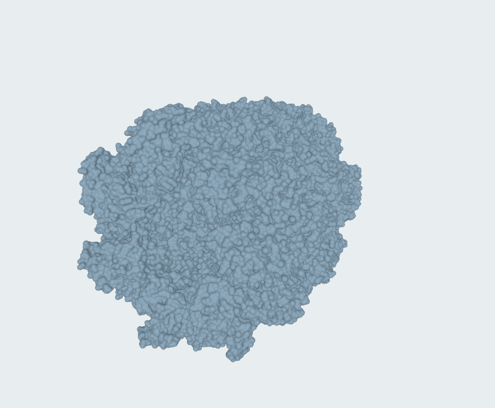
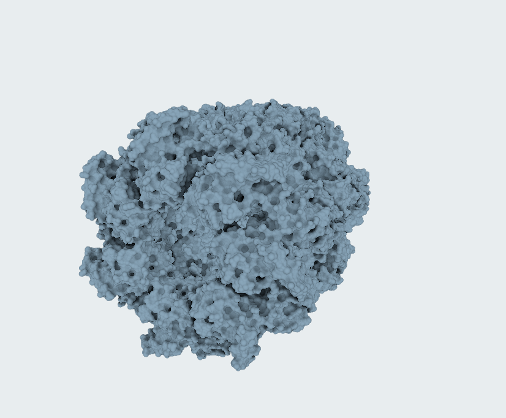

Choose the orbital
Browse orbital energies, occupations and spin. Inspect signed isosurfaces, explore a volume, or compare fields from a Molden file.
Orbitals and density →Orbitals / electron density / custom shaders / AI-enabled
Explore the field. Reveal the molecule. Shape the view with custom surface shaders and live controls.
AI-enabled viewing →
Ask your coding agent to explore molecules, prepare surfaces and export figures.
Included in EigenVista 0.10.6 for Mac and Linux.
EigenVista Education offers video tutorials and downloadable research examples for the GUI and AI connector.
Published downloads: v0.10.6 · Apple Silicon Mac / Linux x86_64 · Experimental preview
Mac: ad-hoc signed; not notarized. Linux: tested on CachyOS; check the runtime requirements. Installation notes

Four tabs / one workspace
A true plane through the HOMO, with signed values, contours and a numerical colorbar. Choose Fields → Quantitative field inspection to probe a point, sample a section or plot a bond profile.

Move the 480 px pane left or right, resize it, and collapse or reorder familiar widgets inside Molecule, Fields, Surfaces and Appearance. Hide Tools to reclaim the scene, or use Zen for a minimal view with the field's numerical key still visible.
Watch / 30 seconds
From a solid molecular envelope to X-ray transparency and a moving clipping boundary. Watch the controls redraw the same density mesh.
The solid density envelope surrounds the bicyclic hydrocarbon. Applying the X-ray shader reveals the atoms beneath; adjusting maxOpacity changes the transparency immediately. The clipping shader then removes the part of the envelope beyond a boundary. Changing zmax moves that boundary through the surface and exposes the molecular framework. The underlying density and isovalue remain the same throughout.
01 / Explore
Browse orbital energies, occupations and spin. Inspect signed isosurfaces, explore a volume, or compare fields from a Molden file.
Orbitals and density →Load a custom shader and tune its controls as you look. Reveal an interior with X-ray opacity, clip a surface, or change its lighting.
Surface shaders →Move between atomic detail and protein cartoons. Color by element or chain, isolate a region, and use ambient occlusion to reveal depth in dense structures.
Molecular representations →
02 / Custom surface shaders
Change the lighting, reveal the framework through a translucent envelope, or move a clipping boundary through the molecule. Shader parameters redraw the existing mesh immediately.
Start with the supplied presets. Load the vertex and fragment files, then adjust the controls in Surface shader. Save a parameter file when you find a look you want to use again.
Try the shader presets →
03 / Molecular orbitals
Choose among the 118 orbitals in this bicyclic hydrocarbon example. Compare the HOMO and LUMO, inspect their nodal structure, and switch between a saved mesh and a volume preview.
Generate a fine grid when you want a detailed surface. Calculations run in the background, with progress and cancellation available while you explore the scene.
Explore the orbital workflow →04 / Large molecular structures
Ambient occlusion brings contacts, recesses and broad cavities into view. Try the Pastel palette for atoms and bonds, or shade an opaque SES or SAS with its own controls.
 AO OFF
AO OFF AO ON
AO ONBring out pockets and clefts on the solvent-excluded surface of the same 1AON complex. Try it on a molecular surface →

AO OFF
AO ON
05 / AI-assisted viewing
Use Codex, Claude Code, Pi, OpenCode or another coding agent to open molecular data, find orbitals, prepare surfaces and export figures. You describe the task in your agent's chat while EigenVista shows the result.
EigenVista 0.10.6 for Mac and Linux includes its prebuilt connection helper, launcher, examples and agent instructions. No source checkout or compiler is needed for the binary setup.
From data to figure
Save molecular data and generated meshes together in an .eigenvista document. Export the current view as a PNG, including a transparent-background option for figures and presentations.